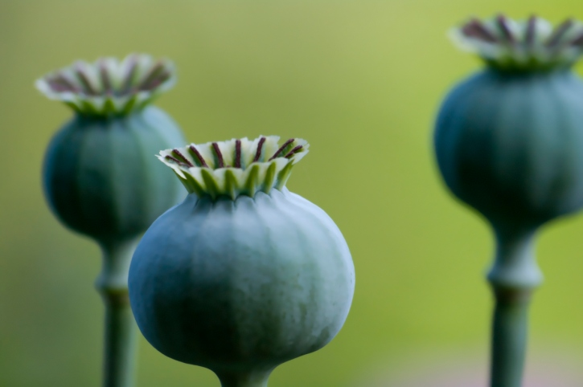

di Elia Pessina
Gli oppiacei sono una macro-categoria di droghe inibenti che si ricavano da una fonte comune:
i fiori delle piante di Papavero Sonnifero.
Questo tipo di sostanze si possono assumere in modi differenti cioè
tramite masticazione o fumando la sostanza.
Il Papavero Sonnifero cresce in grandi quantità soprattutto nella parte settentrinale dell'Afghanistan
e viene esportato senza nessuna conseguenza legale poichè viene scambiato come materia prima
e non sottoforma di stupefacente.
La maggior parte delle esportazioni è verso l'Iran dove viene poi trasformato in vari tipi di stupefacenti.

Papavero Sonnifero